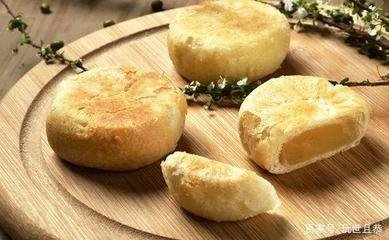
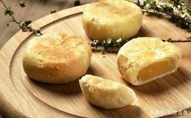

厦门馅饼
|  |
厦门馅饼馅饼在厦门是一种具有百年以上历史的传统食品，料精工细，系选用优质面粉、猪油、上等绿豆制成。制作时，绿豆蒸酥去壳，研得精细，饼皮和饼酥下足油量，揉得恰到好处。烘制时，注意掌握火候，做到内熟外赤不走油。这样做出来的馅饼饼皮香酥油润，馅科冰凉清甜。 厦门馅饼以庆兰斋最为著名。著名的馅饼有南普陀寺素饼、汪记馅饼、日光岩馅饼等。其中，鼓浪屿馅饼是正宗中华百年老字号.厦门的特产，是福建厦门最负盛名的特产之一,具有百年以上历史的传统食品。 |

|  |
厦门馅饼馅饼在厦门是一种具有百年以上历史的传统食品，料精工细，系选用优质面粉、猪油、上等绿豆制成。制作时，绿豆蒸酥去壳，研得精细，饼皮和饼酥下足油量，揉得恰到好处。烘制时，注意掌握火候，做到内熟外赤不走油。这样做出来的馅饼饼皮香酥油润，馅科冰凉清甜。 厦门馅饼以庆兰斋最为著名。著名的馅饼有南普陀寺素饼、汪记馅饼、日光岩馅饼等。其中，鼓浪屿馅饼是正宗中华百年老字号.厦门的特产，是福建厦门最负盛名的特产之一,具有百年以上历史的传统食品。 |